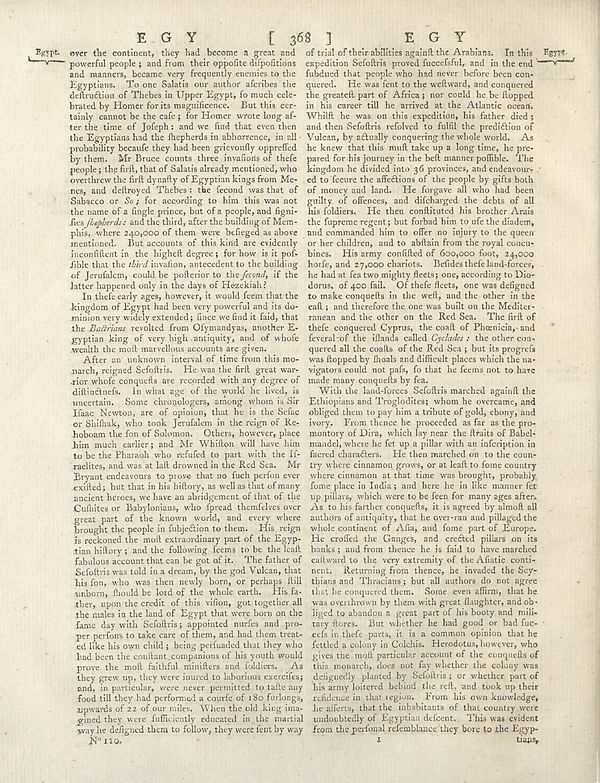

Scan ID britannica:309f765b1ecc83e0a7f7762e44b4a927a7555443:train:1430
Image SHA-256 4405fefdf7b68a3c6472787e25922ed5125f57c753e650518ecdaaf630f59566
Status: ok. Running header: EGY [ 368 ] E G Y (catchword). Removed page furniture: Page-header: EGY [ 368 ] E G Y.
PDF · raw Parse reply · LaTeX
Entries: E0121

| # | Class | Box | Parse 3.5 | Used text | Source |
|---|---|---|---|---|---|
| 1 | Text | [0.0469, 0.0578, 0.502, 0.3703] | Egypt. over the continent, they had become a great and powerful people and from their opposite dispositions and manners, became very frequently enemies to the Egyptians. "To me Salaris our author whether the definition of Thebes in Upper Egypt, is most celebrated by Horror for its magnificence. But this certainly cannot be the epic; for Honor were long at terre time of Jodphs, and we find that even then the Egyptians had the fhepherds in abhorrence, in all probability because they had been grietically oprified by them. Mr Bruce counts are insured if the people; the filt, that of Salats already | over the continent, they had become a great and powerful people; and from their opposite dispositions and manners, became very frequently enemies to the Egyptians. To one Salatis our author ascribes the destruction of Thebes in Upper Egypt, so much celebrated by Homer for its magnificence. But this certainly cannot be the case; for Homer wrote long after the time of Joseph: and we find that even then the Egyptians had the shepherds in abhorrence, in all probability because they had been grievously oppressed by them. Mr Bruce counts three invasions of these people; the first, that of Salatis al | super_vl |
| 2 | Text | [0.1172, 0.3711, 0.5029, 0.4516] | In their early ages, however, it would feem that the kingdom of Egypt had been very powerful and its do anunion very well extraction, since we had it fady, that the _Batiriana_ resulted from Olymandysan, another Egyptians king of every high authority, and of whole wealth, the much moreulous accounts are given. | In these early ages, however, it would seem that the kingdom of Egypt had been very powerful and its dominion very widely extended; since we find it said, that the Badrarians revolted from Ozymandyas, another Egyptian king of very high antiquity, and of whose wealth the most marvellous accounts are given. | super_vl |
| 3 | Text | [0.1191, 0.4523, 0.5039, 0.9422] | After an unknown interval of time from this monarchy existed Sofifris. He on the thrill great war-arian whole conquests are recorded with any other words of difficultés. In what age of the world he lived, is uncertain. Some choralogers, among those is Sir!a Newtown, are still opinion, thus he is the Sefer Shilhak, who took Jerulidam in the origin of Re-holone the fun of Solomon. Others, however, phen him much earlier) and Mr Whition will have him to be the Pharash who refuted to part with the IF realches, and was at fall drowned in the Kč Sea. Mr Bryant endeavors to pose that no lich perform e | After an unknown interval of time from this monarchy existed Sefistris. He was the first great warrior whose conquests are recorded with any degree of difficulties. In what age of the world he lived, is uncertain. Some chronologers, among whom is Sir Isaac Newton, are of opinion, that he is the Sefac or Shishak, who took Jerusalem in the reign of Rehoboam the son of Solomon. Others, however, place him much earlier; and Mr Whiston will have him to be the Pharaoh who refused to part with the Israelites, and was at last drowned in the Red Sea. Mr Bryant endeavours to prove that no such person eve | super_vl |
| 4 | Text | [0.5127, 0.0586, 0.8955, 0.493] | trial of their abilities against the Ambana. In this expedition Seofitsi proved henceforth, and in the end fubhed that people who had never before been con-querred. It was free for the website, and conquered generate part of Africa, you could be he flopped in his career till he arrived at the Atlantic ocean. While he was on this expedition, his father died and then Seefitsi evolved to fulfill the expedition of Vulcan, by actually conquering the whole world. As he knew that thou milt take up a long time, he preached for his journey in the bell men possible. The kingdom he divided into 36 provin | of trial of their abilities against the Arabians. In this expedition Sefotris proved successful, and in the end subdued that people who had never before been conquered. He was sent to the westward, and conquered the greatest part of Africa; nor could he be stopped in his career till he arrived at the Atlantic ocean. Whilst he was on this expedition, his father died; and then Sefotris resolved to fulfil the prediction of Vulcan, by actually conquering the whole world. As he knew that this must take up a long time, he prepared for his journey in the best manner possible. The kingdom he divided i | super_vl |
| 5 | Text | [0.5156, 0.4922, 0.9004, 0.9398] | With the land-forces Seofitsi marched against the Ethiopian and Trojoldietten, whom are overcame, and obliged him to pay him a tritir of gold, ohony and ivory. From theme he proceeded as far as the pro-mony of Uma, which lay near the finest of Babelmaded, when lay the pillar with an inforticipation in faced characters. He then marched on to the country where cinnamon grows, or as leath to form country where cinnamon is that time to brought, probably fome place in India’s and here, he in like manner fet y pilnas, what were to be free for many ages after. At to his farther conquels, it is agreed | With the land-forces Sesostris marched against the Ethiopians and Troglodytes; whom he overcame, and obliged them to pay him a tribute of gold, ebony, and ivory. From thence he proceeded as far as the promontory of Dira, which lay near the straits of Babelmandel, where he set up a pillar with an inscription in faced characters. He then marched on to the country where cinnamon grows, or at least to some country where cinnamon at that time was brought, probably some place in India; and here he in like manner set up pillars, which were to be seen for many ages after. As to his farther conquests, | super_vl |
Britannica scans: National Library of Scotland, CC0 1.0. Wikipedia text: Wikipedia contributors, CC BY-SA 4.0, revision links on each page. Generated 2026-10-18T13:26:14+00:00.